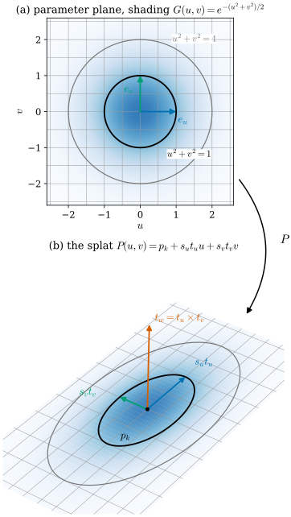
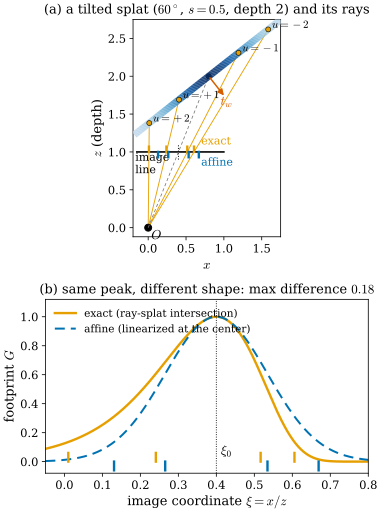
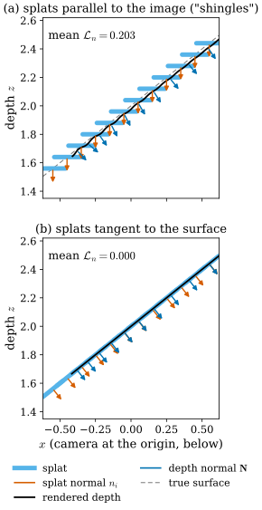

30.3 Surfels and 2D Gaussian Splatting
Goals
- 2D Gaussian Splatting(2DGS)의 primitive를 tangent plane 위의 국소 parametrization으로 보고, 그 first fundamental form과 normal \(t_w = t_u \times t_v\)를 계산하며, 3D Gaussian과 달리 normal이 언제나 정의되는 이유를 말할 수 있다.
- ray–splat intersection이 평면 사이의 homography를 정확히 거꾸로 푸는 계산(두 직선의 cross product)이라는 것과, 그래서 affine 근사가 필요 없다는 것, 그리고 edge-on 시점에서 쓰는 low-pass filter의 역할을 설명할 수 있다.
- depth distortion을 ray 위 weight distribution의 퍼짐으로, normal consistency를 “splat이 rendering된 surface에 접한다”는 조건으로 해석할 수 있다.
- SuGaR가 Gaussian에서 SDF와 mesh를 얻는 과정을 이 장의 기하(implicit function, orientation, Poisson equation)로 설명할 수 있다.
Prerequisites
- Section 0.3: parametrization(Definition 0.3.1), normal \(\mathbf{x}_u \times \mathbf{x}_v\)(Definition 0.3.3), first fundamental form과 넓이(Definition 0.3.5, (0.3.3)). Example 0.6.4: \(\RP^2\)와 homogeneous coordinates
- Section 29.1(가장 짧은 축 = normal, 부호와 간격의 문제), Section 29.2(scale이 같으면 rotation이 정해지지 않는다), Section 29.3(EWA = 투영의 1차 근사, dilation)
- Section 30.1(implicit surface의 orientation, TSDF), Section 30.2(level set normal \(\grad G/\abs{\grad G}\))
- 2DGS [Huang24]와 3DGS [Kerbl23]의 rendering 파이프라인
Motivation
Section 30.2까지는 surface를 공간의 함수 \(f\)의 zero set으로 보았다. normal과 curvature는 \(f\)를 미분해 얻었고, mesh는 marching cubes로 꺼냈다. 이 절은 반대 방향의 표현을 본다. surface를 작은 평면 조각, 곧 surfel(surface element)들의 모임으로 직접 쓰는 것이다. 이것은 point-based graphics의 오래된 생각이고 [Zwicker01s], 2D Gaussian Splatting [Huang24]이 3DGS의 미분가능한 rasterizer와 결합했다.
Section 29.1의 마지막 상자를 다시 보자. 납작한 3D Gaussian의 normal \(r_3\)은 부호가 정해지지 않았고, 두 작은 scale이 같으면 아예 정해지지 않았으며, 간격이 좁으면 흔들렸다. 3DGS의 loss에는 Gaussian을 납작하게 만드는 항도 없다. 2DGS는 셋째 scale을 처음부터 \(0\)으로 둔다. 그러면 primitive 하나가 Tour의 뜻 그대로 parametrized surface가 된다. 이 절은 세 질문에 답한다.
- 2D Gaussian은 어떤 parametrization이고, 그 normal과 first fundamental form은 무엇인가?
- 2DGS의 rasterizer는 3DGS의 affine 근사(Section 29.3)를 어떻게 피하는가? 어디서 그 계산이 깨지는가?
- 두 정규화 항과 SuGaR의 정규화는 기하적으로 무엇을 강제하는가? Gaussian에서 부호까지 일관된 surface는 어떻게 얻는가?
A 2D Gaussian Is a Local Parametrization
2DGS의 primitive는 중심 \(p_k\), 서로 수직인 두 unit tangent vector \(t_u, t_v\), 두 scale \(s_u, s_v \gt 0\)로 정해진다. \(t_w = t_u \times t_v\)로 두면 \(R = [t_u, t_v, t_w] \in \mathrm{SO}(3)\)이다. 논문은 이것을 마지막 성분이 \(0\)인 scale 행렬 \(S = \diag(s_u, s_v, 0)\)과 함께 쓴다. primitive가 놓인 평면의 점과 그 위의 Gaussian 값은
이다 [Huang24]. 3DGS처럼 opacity \(\alpha\)와 spherical harmonics 색이 붙는다(Section 29.6).
Proposition 30.3.1 (geometry of a 2D Gaussian splat). (30.3.1)의 \(P\colon \R^2 \to \R^3\)은 평면 하나의 parametrization이고
- (a) \(P_u = s_u t_u\), \(P_v = s_v t_v\)이므로 first fundamental form은 \(E = s_u^2\), \(F = 0\), \(G = s_v^2\)이다. 넓이 요소는 \(\sqrt{EG - F^2}\,du\,dv = s_us_v\,du\,dv\)이고, \(1\sigma\) ellipse \(u^2 + v^2 \le 1\)의 넓이는 \(\pi s_us_v\)다.
- (b) \(P_u \times P_v = s_us_v\,t_w\)이므로 unit normal은 \(\mathbf{N} = t_w = t_u \times t_v\)이고, \(s_u, s_v \gt 0\)인 한 언제나 정의된다.
- (c) 평면 위의 점 \(P(u, v)\)에서 Gaussian의 값을 정하는 거리는 \(\abs{P(u, v) - p_k}_\Sigma^2 = u^2 + v^2\)(평면 안의 Mahalanobis distance, (29.1.2). \(\Sigma\)는 rank 2이므로 평면 안에서만 inverse를 취한다(pseudo-inverse))이고, Euclidean 거리는 \(\abs{P(u, v) - p_k}^2 = s_u^2u^2 + s_v^2v^2\)이다.
기호 하나를 짚어 두자. (a)의 \(G = s_v^2\)는 first fundamental form의 coefficient이고 Gaussian의 값이 아니다. 논문과 (29.1.1)을 따라 이 절은 Gaussian을 \(G\)로 쓰되 언제나 인자와 함께 \(G(u, v)\), \(\hat G\), \(G_i\)로 쓴다.
(c)를 말로 하면, \((u, v)\)는 Gaussian의 metric에서 orthonormal인 좌표이고, first fundamental form \(\diag(s_u^2, s_v^2)\)은 그 좌표에서 본 Euclidean metric이다. Section 29.1의 “Gaussian은 표준 Gaussian의 affine image”를 평면 하나에서 다시 본 것이다. Tour의 Figure 0.3.3으로 말하면, \(uv\)-평면 위에서 surface 위의 길이 \(\varepsilon\)을 나타내는 ellipse의 반축은 \(\varepsilon/s_u\)와 \(\varepsilon/s_v\)다.

Figure 30.3.1을 위에서 아래로 따라가 보자. (a)의 단위원은 Gaussian 값이 \(e^{-1/2}\)인 level set이고, 곡선 화살표 \(P\)를 따라 (b)로 가면 공간의 평면 위의 ellipse가 된다. 정사각 격자의 한 칸(넓이 \(0.25\))은 (b)에서 넓이 \(0.25\,s_us_v = 0.045\)인 직사각형이 된다. 두 파란·초록 화살표가 그 격자의 두 변 방향이고, 둘의 cross product 방향이 평면에서 솟은 주홍 \(t_w\)다. Tour Section 0.3에서 \(\mathbf{x}_u, \mathbf{x}_v\)가 tangent plane을 펼치고 \(\mathbf{x}_u \times \mathbf{x}_v\)가 normal이었던 것이 여기서는 primitive의 정의 자체다.
Ray–Splat Intersection: an Exact Homography
3DGS는 Gaussian을 화면에 그리기 위해 투영 \(\varphi\)를 Gaussian 중심에서 1차 근사했다((29.3.4)). 2DGS의 splat은 평면 조각이므로 더 좋은 길이 있다. 평면에서 화면으로 가는 투영은 homogeneous coordinates로 쓰면 정확히 linear map이기 때문이다.
world 좌표에서 카메라 좌표로 가는 rigid motion을 \((R_{\mathrm{cw}}, t_{\mathrm{cw}})\), intrinsic matrix를 \(\mathsf{K}\)라 하자. 이제부터 \((x, y)\)는 픽셀 좌표다. 평면 위의 점 \(P(u, v)\)의 픽셀 좌표 \((x, y)\)는
로 주어진다. \(Q\)는 \(3 \times 3\) 행렬이고 \(Z\)는 카메라 좌표의 depth다. 곧 splat 평면에서 image plane으로 가는 map은 \(\RP^2\)에서 \(\RP^2\)로 가는 homography다(Tour Example 0.6.4 뒤의 In computer vision 상자). 이것은 근사가 아니다. 그러므로 픽셀 \((x, y)\)에서 Gaussian을 계산하려면 \(Q\)를 거꾸로 풀면 된다.
Proposition 30.3.2 (ray–splat intersection).
\(Q\)의 행을 \(q_1, q_2, q_3\)라 하자(공식 코드의 Tu, Tv, Tw). 픽셀 \((x, y)\)를 지나는 ray가 splat 평면과 만나는 점의 좌표 \((u, v)\)는
이고, 그 점의 depth는
이다(두 vector의 cross product가 셋째 성분 \(0\)을 가지면 ray가 평면과 평행하다).
Derivation. \(x = X/Z\)는 \(xZ - X = 0\), 곧 \(\inner{x q_3 - q_1}{(u, v, 1)} = 0\)이다. \(y\)도 같다. 두 식은 \(uv\)-평면의 homogeneous coordinates \((u, v, 1)\)에 대한 두 linear equation, 곧 \(\RP^2\)의 두 직선이다. 두 직선 \(\ell_1, \ell_2\)에 동시에 놓인 점은 \(\ell_1\)과 \(\ell_2\)에 모두 수직인 vector이므로 \(\ell_1 \times \ell_2\)에 비례한다. 마지막 성분으로 나누면 \((u, v)\)다. 2DGS 논문은 같은 계산을 \(4\)차원 평면 \(h_x = (-1, 0, 0, x)\), \(h_y = (0, -1, 0, y)\)를 splat 좌표로 옮겨 쓰고(논문의 식 (8)–(10)), 공식 rasterizer는 k = pix.x * Tw - Tu, l = pix.y * Tw - Tv, p = cross(k, l), \((u, v) = (p_x/p_z, p_y/p_z)\)로 계산한다(forward.cu 355–361행). depth는 같은 파일 369행의 s.x * Tw.x + s.y * Tw.y + Tw.z다. Tw는 clip 좌표의 \(w\) 성분을 주는 행이고 3DGS의 projection matrix에서 \(w\)는 카메라 \(z\)이므로, 이것은 z-depth다.

Figure 30.3.2의 (a)에서 주황 ray들을 따라가 보자. splat 위의 점들은 \(u\) 간격이 같지만, 카메라에 가까운 아래쪽 점들의 ray가 더 벌어져 image line에서 더 넓게 퍼진다. 1차 근사는 이 원근 효과를 중심에서의 기울기 하나로 바꾸므로 파란 눈금은 symmetric하다. (b)에서 같은 차이를 footprint로 본다. 꼭대기는 같은 곳이지만 모양이 다르다. Proposition 29.3.2에 따르면 image plane에 평행한 납작한 Gaussian은 1차 근사에서도 정확했다. 이 그림처럼 splat이 기울어 있고 크기가 depth에 비해 클 때(여기서 \(s/z = 0.25\)) 차이가 커진다. 2DGS는 \(Q\)를 정확히 거꾸로 풀기 때문에 이 차이가 없다. 이 계산은 perspective-correct texture mapping과 같은 계산이다. 차이가 결과에도 나타난다. 2DGS 논문의 부록 ablation(DTU, Table 6)에서 같은 splat을 3DGS의 affine 근사로 rasterize하면(셋째 scale을 \(10^{-6}\)으로 둔 3D Gaussian) 평균 Chamfer distance가 0.88에서 1.08로 나빠진다(둘 다 expected depth를 TSDF fusion한 mesh) [Huang24].
When the splat is seen edge-on
(30.3.3)이 깨지는 곳이 하나 있다. splat 평면이 ray와 평행하면, 곧 splat을 옆에서 보면(\(t_w\)와 시선 사이의 각 \(\theta\)가 \(90^\circ\)) \(Q\)가 singular가 되어 평면 전체가 화면의 한 직선으로 짓눌린다. 그 근처에서는 footprint의 폭이 거의 \(0\)이어서 픽셀 중심 사이로 빠져나갈 수 있다. 2DGS는 object-space low-pass filter를 쓴다 [Huang24].
\((u, v)\)는 (30.3.3)으로 구한 그 픽셀의 splat 좌표이고, \(G\)를 2-vector \(w\)의 함수 \(G(w) = \exp(-\abs{w}^2/2)\)로 본다. \(c\)는 논문에서 splat 중심의 투영이다. 공식 rasterizer는 \(\exp\!\big(-\tfrac12\min(u^2 + v^2,\ 2\abs{(x, y) - c}^2)\big)\)를 계산하고(forward.cu 362–366행, auxiliary.h의 FilterInvSquare = 2), \(c\)로는 투영된 \(3\sigma\) ellipse의 bounding box 중심을 쓴다(같은 파일 118행의 주석). perspective 아래에서 이 둘은 조금 다르다. 3DGS의 dilation(Section 29.3)과 비교하면 차이가 분명하다. dilation은 covariance를 더하는 convolution이라 모든 Gaussian을 조금씩 넓힌다. 2DGS의 filter는 둘 가운데 큰 값을 고르는 바닥(floor)이라 충분히 큰 splat에는 거의 영향이 없고, 픽셀보다 가늘어진 splat에만 픽셀 크기의 바닥을 깐다.
![위아래 두 패널. (a) 가로축 tilt θ(0부터 90도), 세로축 half-width(px). 주황 곡선이 θ = 0에서 2로 시작해 2cos θ처럼 줄어 90도에서 0이 된다. 회색 점선이 0.707에 가로로 있고, θ가 약 69도를 넘어 주황 곡선이 회색 점선 아래로 내려가는 부분이 분홍으로 칠해져 있으며 narrower than the filter: may fall between pixels라고 적혀 있다. 88도에 점선 세로선이 있다. (b) 가로축 image x(px), 세로축 value. 원점에 아주 좁은 주황 spike가 있고, 그보다 넓은 검은 종 모양 곡선(G hat = max)이 있다. 픽셀 중심 -2.6, -1.6, -0.6, 0.4, 1.4, 2.4에 줄기 그래프가 있는데, 주황 점(raw 값)은 모두 0에 있고 흰 원(filtered 값)은 0.4에서 0.85, -0.6에서 0.70 등이다. 주석 raw value at every pixel centre < 10^-6이 있다.](figures/fig-30-3-3-edge-on-filter.svg)
Figure 30.3.3의 (a)는 기하 그대로다. splat을 \(\theta\)만큼 기울이면 화면 위의 폭이 대략 \(\cos\theta\)배가 되어, 옆에서 볼수록 선에 가까워진다. (b)는 \(\theta = 88^\circ\)인 순간의 한 줄 픽셀이다. 주황 spike는 두 픽셀 중심 사이에 끼어 있어서 어느 픽셀에서도 값이 거의 \(0\)이다. 검은 곡선이 filter를 더한 값이고, 픽셀 중심에서의 흰 원이 실제로 쓰이는 값이다. 이 splat은 적어도 한두 픽셀에 opacity를 남기고, 그 픽셀의 loss에서 gradient를 받는다. 대신 이 순간의 \(\hat G\)는 splat의 모양이 아니라 filter의 모양이므로, edge-on 근처의 기여는 실제 기하보다 두껍게 그려진다.
Depth Distortion and Normal Consistency
2DGS의 loss는 색 loss에 두 정규화 항을 더한 \(\mathcal{L} = \mathcal{L}_c + \lambda_d\mathcal{L}_d + \lambda_n\mathcal{L}_n\)이다 [Huang24]. 논문은 두 weight를 \(\alpha, \beta\)로 쓰지만, 이 절에서 \(\alpha\)는 opacity이므로 코드의 이름(lambda_dist, lambda_normal)을 따른다. 논문은 \(\lambda_n = 0.05\), \(\lambda_d = 1000\)(bounded scene)과 \(100\)(unbounded scene)을 쓴다. 공식 코드의 기본값은 \(\lambda_n = 0.05\), \(\lambda_d = 0\)이고(arguments/__init__.py), DTU 평가 script는 \(\lambda_d = 1000\)을 준다(scripts/dtu_eval.py). 두 항은 각각 3000, 7000 iteration 뒤에 켜진다(train.py 77–78행).
Depth distortion: one ray, one depth
ray 위에서 splat \(i\)와 만나는 depth를 \(z_i\), blending weight를 \(\omega_i = \alpha_i\hat G_i\prod_{j \lt i}(1 - \alpha_j\hat G_j)\)라 하자. Mip-NeRF 360의 distortion loss [Barron22] \(\iint w(s)w(s')\abs{s - s'}\,ds\,ds'\)을 따라 2DGS 논문은 \(\mathcal{L}_d = \sum_{i,j}\omega_i\omega_j\abs{z_i - z_j}\)를 쓴다. 논문의 부록과 공식 코드는 이것을 제곱 형태로 바꾼다. 부록이 드는 이유는 splat과의 교점 depth가 sort 순서대로 놓인다는 보장이 없다는 것이다. 제곱 형태는 순서와 무관하게 front-to-back 한 번의 pass로 누적할 수 있다. 그리고 depth \(z\) 대신
를 쓴다(\(z_{\mathrm{near}} = 0.2\). \(z_{\mathrm{far}}\)는 논문 부록에 1000, 공식 코드 auxiliary.h에 100으로 되어 있다). 제곱 형태는 weight가 준 probability distribution의 분산이다.
\(\mathrm{Var}_\omega(m) = \sum_i\omega_i(m_i - \bar m)^2/A\), \(\bar m = \sum_i\omega_im_i/A\)이다. 이 값이 \(0\)이 되는 것은 weight가 한 depth에 몰릴 때, 곧 ray가 surface를 한 번 만나고 거기서 불투명해질 때다. depth distortion은 rendering weight를 “한 점에 놓인 질량”으로 만들라는 요구다. 이것이 volume rendering을 surface rendering에 가깝게 만든다. 공식 rasterizer는 front-to-back으로 \(\sum\omega\), \(\sum\omega m\), \(\sum\omega m^2\)을 누적하며 이 값을 한 번에 계산한다(forward.cu 401–405행).
\(m\)은 \(1/z\)의 affine function이다. 그래서 같은 depth 차이라도 먼 곳에서는 \(m\)의 차이가 작다. 논문은 이것을 “먼 primitive의 weight를 낮추기 위해서”라고 설명한다. Mip-NeRF 360도 distortion을 ray의 거리 \(t\)가 아니라 정규화된 거리 \(s = (g(t) - g(t_n))/(g(t_f) - g(t_n))\)로 재고, \(t\)를 쓰면 먼 구간의 weight가 지나치게 커져 가까운 구간이 무시된다고 적는다. \(g(t) = 1/t\)를 쓰면 \(s\)는 disparity(inverse depth)의 affine function이다. inverse depth가 왜 자연스러운 좌표인지는 Section 30.4에서 평면의 inverse depth가 affine이라는 사실로 다시 본다.
Normal consistency: splats tangent to the rendered surface
둘째 항은 다음과 같다 [Huang24].
\(n_i\)는 카메라 쪽을 향한 splat normal이고, \(p_s(x, y)\)는 픽셀 \((x, y)\)에서 rendering한 depth를 3D로 되돌린 점이다. 논문은 accumulated opacity가 0.5가 되는 median depth를 쓰고, 공식 코드는 expected depth와 median depth를 고를 수 있으며(기본값은 expected depth, DTU script는 median), \(\mathbf{N}\)을 이웃 픽셀 점들의 central difference의 cross product로 계산한다(utils/point_utils.py의 depth_to_normal). 코드는 세로(\(y\)) 방향 차분 \(\times\) 가로(\(x\)) 방향 차분, 곧 \(\partial_yp_s \times \partial_xp_s = -\partial_xp_s \times \partial_yp_s\)의 순서로 계산하므로 \(\mathbf{N}\)은 언제나 카메라 쪽을 향한다(Proposition 30.4.1에서 \(\partial_xp_s \times \partial_yp_s\)는 카메라에서 멀어지는 쪽이다). 또 코드의 loss는 픽셀마다 \(1 - A\,\big(\sum_i\omega_in_i\big)^{\mathsf T}\mathbf{N}\)(\(A = \sum_i\omega_i\), rendering한 normal map과 depth normal의 inner product)이고, 이것은 \(A = 1\)일 때 (30.3.8)과 같다.
기하적으로 읽어 보자. rendering된 depth map은 픽셀 좌표 \((x, y)\)로 parametrize된 surface \(p_s(x, y)\)이고(Section 30.4), \(\mathbf{N}\)은 Tour Definition 0.3.3의 \(\mathbf{x}_u \times \mathbf{x}_v\)를 finite difference로 계산한 그 surface의 normal이다. 그러므로 \(n_i^{\mathsf T}\mathbf{N} = 1\)이라는 것은 splat \(i\)의 평면이 rendering된 surface의 tangent plane과 평행하다는 것이다. normal consistency는 “각 splat은 splat 전체가 만든 surface에 접해야 한다”는 자기 일관성 조건이다. splat 하나가 혼자 픽셀을 덮고 있으면 rendering된 depth는 그 splat의 평면 자체이므로 조건은 저절로 맞는다. 조건이 깨지는 것은 여러 splat이 함께 만든 surface의 방향과 각 splat의 방향이 다를 때다.

Figure 30.3.4의 두 패널은 거의 같은 surface를 rendering한다. 검은 곡선이 거의 같다. 차이는 화살표에 있다. (a)에서는 splat 하나하나가 카메라를 정면으로 보는 기왓장처럼 놓여, 각자의 normal(주홍)이 함께 만든 surface의 normal(파랑)과 \(38.7^\circ\) 어긋난다. 3DGS에서 납작하지만 비스듬히 쌓인 Gaussian들이 만드는 것도 이런 모양이다. (b)에서는 splat이 surface의 조각으로 놓여 두 normal이 일치한다. (30.3.8)은 이 차이만을 벌한다. 단, \(\mathbf{N}\)은 depth map의 finite difference이므로 depth가 비스듬하게 보이는 곳(grazing angle)이나 depth가 불연속인 곳에서는 잡음이 크다. 이것은 Section 30.4에서 정량적으로 본다.
From Gaussians to an Oriented Surface: SuGaR and Poisson
2DGS 자신은 학습이 끝난 뒤 rendering한 depth map들을 TSDF fusion해 mesh를 얻는다(Section 30.1. 논문은 voxel 0.004, truncation 0.02이고, 공식 DTU 평가 script는 truncation 0.016을 준다. unbounded scene용 추출 모드는 따로 있다). SuGaR [Guedon24]는 3D Gaussian을 그대로 두고, Gaussian이 surface에 붙도록 정규화한 뒤 implicit function을 거쳐 mesh를 얻는다. 이 장의 기하가 거의 모두 쓰인다.
이상적인 SDF. SuGaR는 Gaussian들의 density \(d(p) = \sum_g\alpha_g G_g(p)\)에서 출발한다. Gaussian들이 납작하고, 서로 많이 겹치지 않으며, 불투명하다면(\(\alpha_g = 1\)) 점 \(p\) 근처의 density는 가장 기여가 큰 Gaussian \(g^*\) 하나로 정해지고, (29.1.3)에서 가장 짧은 축 방향 항만 남아
이 된다(\(s_{g^*}\)는 가장 작은 scale, \(n_{g^*}\)는 그 축). \(\bar f\)는 Gaussian이 놓인 평면까지의 signed distance, 곧 평면의 SDF다(Exercise 30.3.5). SuGaR는 같은 공식을 실제 density에 적용한 \(f(p) = \pm s_{g^*}\sqrt{-2\log d(p)}\)를 “ideal” distance function이라 부른다. \(d = \bar d\)이면 \(f = \bar f\)다. 정규화 항은 Gaussian들에서 sample한 점 \(p\)에서 이 \(f\)와, rendering한 depth map에서 추정한 SDF \(\hat f(p)\)(\(p\)와, \(p\)를 지나는 시선이 depth map과 만나는 점 사이의 거리. 시선을 따라 잰 거리이므로 TSDF처럼 Euclidean distance보다 길 수 있다)의 차 \(\frac{1}{\abs{\mathcal P}}\sum_p\abs{\hat f(p) - f(p)}\)이다(논문 식 (8)). 여기에 \(f\)의 normal \(\grad f/\abs{\grad f}\)를 \(n_{g^*}\)에 맞추는 항을 더한다(식 (10)). 곧 “Gaussian 하나하나가 surface의 tangent plane 조각이 되도록, 그리고 그 normal이 가장 짧은 축과 일치하도록” 만드는 정규화다. 학습은 정규화 없이 7000 iteration, opacity에 entropy loss를 건 2000 iteration, opacity가 0.5보다 작은 Gaussian을 지운 뒤 정규화를 건 6000 iteration으로 진행한다.
Mesh 추출. 학습 뒤 SuGaR는 density의 level set \(\{d = \lambda\}\)(\(\lambda = 0.3\)) 위의 점들을 찾는다. training view의 depth map에서 무작위로 고른 픽셀마다 시선을 따라 Gaussian의 \(\pm 3\sigma\) 범위(시선 방향의 표준편차 기준)를 sample하고, density가 \(\lambda\)를 지나는 곳 가운데 카메라에 가장 가까운 점을 linear interpolation으로 찾는다. 그 점의 normal은 level set의 normal \(\grad d/\abs{\grad d}\)이다(Section 30.2). 논문과 공식 코드(sugar_model.py 2118행)가 모두 density가 커지는 쪽을 쓴다. 마지막으로 이 oriented point들에 Poisson surface reconstruction을 쓴다(depth 10).
Poisson surface reconstruction [Kazhdan06]은 물체 안에서 \(1\), 밖에서 \(0\)인 indicator function \(\chi\)를 찾는다. \(\chi\)의 gradient는 surface 근처를 빼면 \(0\)이고 surface에서는 안쪽 normal 방향이므로, oriented point들의 normal로 만든 vector field \(V\)에 대해 \(\grad\chi \approx V\)를 최소제곱으로 풀면 Poisson equation \(\Delta\chi = \divg V\)가 된다. surface는 \(\chi\)의 level set으로 꺼낸다. 여기서 normal의 부호가 결정적이다. 이웃한 점의 normal이 서로 반대이면 \(V\)가 상쇄되어 \(\chi\)가 안팎을 구별하지 못한다.
Summary
- 2D Gaussian은 \(P(u, v) = p_k + s_ut_uu + s_vt_vv\)라는 평면 조각의 parametrization이다. \(E = s_u^2\), \(F = 0\), \(G = s_v^2\)이고 normal \(t_w = t_u \times t_v\)는 scale과 무관하게 정해지는 parameter다. 남는 모호함은 부호뿐이고, rasterizer는 splat을 양면으로 쓴다.
- splat 평면에서 화면으로 가는 투영은 homography이므로 ray–splat intersection은 두 직선의 cross product로 정확히 풀린다. 3DGS의 affine 근사가 필요 없다. splat이 edge-on이면 \(Q\)가 singular해지고, 2DGS는 픽셀 크기의 Gaussian과의 \(\max\)로 바닥을 깐다.
- depth distortion은 ray 위 weight distribution의 분산(inverse depth에 affine인 좌표 \(m\)에서)을 줄여 ray가 한 depth에서 멈추게 한다. normal consistency는 각 splat이 splat 전체가 rendering한 surface에 접하라는 조건이다.
- SuGaR는 density에서 만든 SDF(이상적인 경우 납작한 Gaussian이 놓인 평면의 SDF \(\pm\inner{p - \mu}{n}\))를 depth map이 보는 SDF에 맞추어 정규화하고, density의 level set과 그 gradient normal로 Poisson reconstruction을 한다. 부호까지 일관된 normal은 안과 밖을 가르는 implicit function에서 온다.
다음 절에서는 이 절에서 두 번 미뤄 둔 대상, depth map 자체를 본다. depth map은 픽셀 좌표로 parametrize된 surface이고, 그 first fundamental form은 한 픽셀이 덮는 surface의 넓이를 준다. grazing angle에서 depth와 normal이 불안정한 이유, inverse depth가 평면에서 affine인 이유, smoothness prior가 무엇을 벌하는지를 본다.
Quick check
Exercise 30.3.1 ★ \(s_u = 0.6\), \(s_v = 0.3\)인 splat에서 \(1\sigma\) ellipse와 \(2\sigma\) ellipse의 넓이를 구하여라. \(s_u = s_v = s\)이면 \(R = [t_u, t_v, t_w]\) 가운데 무엇이 splat에 의해 정해지지 않는가? 그것이 normal에 영향을 주는가?
Solution
Proposition 30.3.1(a)에서 넓이 요소가 \(s_us_v\,du\,dv = 0.18\,du\,dv\)이므로 \(u^2 + v^2 \le k^2\)의 넓이는 \(0.18\pi k^2\), 곧 \(1\sigma\)는 \(0.18\pi \approx 0.565\), \(2\sigma\)는 \(0.72\pi \approx 2.26\)이다. \(s_u = s_v\)이면 \(t_w\) 둘레로 \(t_u, t_v\)를 같이 돌려도 \(P\)의 image와 \(G\)의 값이 그대로다(\(u^2 + v^2\)이 회전에 불변). 그래서 \(t_u, t_v\)는 그 회전만큼 정해지지 않지만, 그 회전은 \(t_w\)를 고정하므로 normal은 정해진다. 3D Gaussian에서 \(s_2 = s_3\)이면 normal 후보 \(r_3\) 자체가 정해지지 않았던 것(Exercise 29.1.5)과 다르다.
Verification: verify/v-30-3-surfels-2dgs.py
Exercise 30.3.2 ★ 카메라가 원점에 있고 \(\mathsf{K} = I_3\)(정규화 좌표)이다. splat이 \(p_k = (0, 0, 2)\), \(t_u = e_1\), \(t_v = e_2\), \(s_u = s_v = 0.1\)이다. (30.3.2)의 \(Q\)를 쓰고, (30.3.3)으로 픽셀 \((x, y) = (0.03, -0.01)\)의 \((u, v)\)와 depth를 구하여라.
Solution
\(Q = \begin{pmatrix} 0.1 & 0 & 0 \\ 0 & 0.1 & 0 \\ 0 & 0 & 2 \end{pmatrix}\)이다(\(X = 0.1u\), \(Y = 0.1v\), \(Z = 2\)). \(k = xq_3 - q_1 = (-0.1, 0, 0.06)\), \(l = yq_3 - q_2 = (0, -0.1, -0.02)\)이고 \(k \times l = (0 \cdot (-0.02) - 0.06 \cdot (-0.1),\ 0.06 \cdot 0 - (-0.1)(-0.02),\ (-0.1)(-0.1) - 0) = (0.006, -0.002, 0.01)\)이다. 셋째 성분으로 나누면 \((u, v) = (0.6, -0.2)\)이고, depth는 \(\inner{q_3}{(0.6, -0.2, 1)} = 2\)이다. 확인: \(P(0.6, -0.2) = (0.06, -0.02, 2)\)이고 \((0.06/2, -0.02/2) = (0.03, -0.01)\)이다. 이 splat은 image plane에 평행하므로 \(u = 2x/s_u\)처럼 \((x, y)\)의 affine function이 된다.
Verification: verify/v-30-3-surfels-2dgs.py
Exercise 30.3.3 ★ 한 ray에서 두 splat이 weight \(0.5\)씩으로 depth \(2\)와 \(4\)에서 만난다. \(z_{\mathrm{near}} = 0.2\), \(z_{\mathrm{far}} = 100\)으로 (30.3.6)의 \(m\)과 (30.3.7)의 값을 구하여라. 같은 두 splat이 depth \(20\)과 \(40\)에 있으면 값은 몇 배가 되는가?
Solution
\(z_{\mathrm{far}}/(z_{\mathrm{far}} - z_{\mathrm{near}}) = 100/99.8\)이므로 \(m(2) = 1.002 \times 0.9 = 0.9018\), \(m(4) = 1.002 \times 0.95 = 0.9519\)이다. 한쪽 합은 \(0.5 \cdot 0.5 \cdot (0.0501)^2 \approx 6.28 \times 10^{-4}\)이다. \(A = 1\), \(\bar m = 0.9269\), \(\mathrm{Var} = 0.0251^2\)이므로 (30.3.7)의 우변과 같다. depth가 10배이면 \(m\)의 차이 \(\propto z_{\mathrm{near}}(1/z_1 - 1/z_2)\)가 \(1/10\)이 되므로 loss는 \(1/100\)배다. 같은 비율로 떨어져 있어도 먼 곳의 퍼짐은 덜 벌한다.
Verification: verify/v-30-3-surfels-2dgs.py
Exercise 30.3.4 ★★ \(45^\circ\) 기운 평면을 image plane에 평행한 작은 splat들(“shingles”)이 덮고, rendering된 depth가 그 평면과 같다고 하자. 모든 픽셀에서 coverage(\(\sum_i\omega_i\))가 \(1\)이면 \(\mathcal{L}_n\)은 얼마인가? 같은 평면을 3DGS의 납작한 Gaussian으로 표현할 때도 같은 문제가 생기는가? 2DGS의 loss가 이것을 어떻게 바로잡는가?
Solution
rendering된 depth가 평면이므로 \(\mathbf{N}\)은 평면의 normal이고, 모든 splat normal \(n_i\)는 optical axis 방향(카메라 쪽)이므로 \(n_i^{\mathsf T}\mathbf{N} = \cos 45^\circ\)이다. 따라서 \(\mathcal{L}_n = \sum_i\omega_i(1 - \cos 45^\circ) = 1 - 0.707 = 0.293\)이다(Figure 30.3.4의 경사 \(0.8\)이면 \(0.219\)). 3DGS에서도 각 Gaussian의 가장 짧은 축은 rendering된 surface와 무관하게 정해지므로 같은 “기왓장” 배치가 가능하다. 3DGS에는 이것을 벌하는 항이 없다. 2DGS에서는 \(\mathcal{L}_n\)의 gradient가 각 splat의 \(t_w\)를 \(\mathbf{N}\) 쪽으로 돌리고, 동시에 depth를 통해 splat의 위치도 움직여 두 normal이 맞는 배치(Figure 30.3.4(b))로 간다.
Verification: verify/v-30-3-surfels-2dgs.py
Exercise 30.3.5 ★ (30.3.9)에서 \(\bar f(p) = \pm\inner{p - \mu}{n}\)임을 보이고, \(\bar f\)가 eikonal equation \(\abs{\grad\bar f} = 1\)을 만족함을 확인하여라. \(\bar f\)의 zero set은 무엇인가?
Solution
\(h = \inner{p - \mu}{n}\)이라 하면 \(\bar d = \exp(-h^2/(2s^2))\)이므로 \(-2\log\bar d = h^2/s^2\)이고 \(s\sqrt{h^2/s^2} = \abs{h}\)이다. 부호를 붙이면 \(\bar f = \pm h\)다. \(\grad h = n\)(unit vector)이므로 \(\abs{\grad\bar f} = 1\)이다. zero set은 \(\mu\)를 지나고 \(n\)에 수직인 평면, 곧 납작한 Gaussian이 놓인 평면이다. SuGaR의 정규화는 실제 density에서 만든 \(f\)를 rendering이 보는 SDF \(\hat f\)에 맞추는데, Gaussian이 납작하고 불투명하며 서로 덜 겹치는 이상적인 경우 \(f\)가 바로 이 평면의 SDF \(\bar f\)다. 그러므로 이 정규화는 Gaussian이 놓인 평면이 rendering이 보는 surface와 같아지도록 Gaussian을 움직인다.
Verification: verify/v-30-3-surfels-2dgs.py